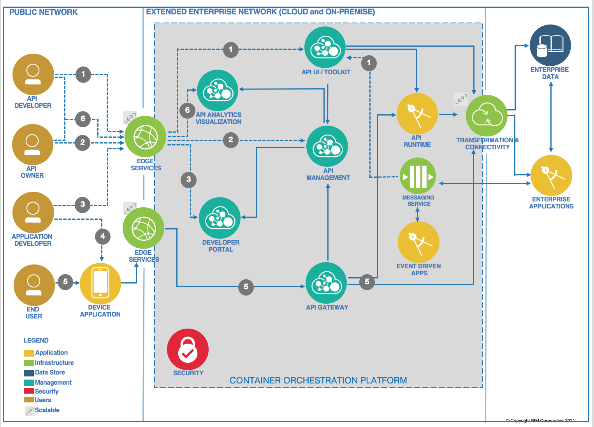

Modernization from API lifecycle
This note summarizes some of the best practices for introducing API management in development practices and architecture patterns within an enterprise setting.
Move from a pure API gateway to an API Management system
An API Gateway helps provide security, control, integration, and optimized access to a full range of mobile, web, application programming interface (API), service-oriented architecture (SOA), B2B and cloud workloads. Gateways are used in the following patterns:
- As a Security Gateway, placed between the consumer facing firewall and the system of records facing firewall (DMZ). It is used for both policy enforcement and consistent security policies across business channels.
- As an API Gateway, both as an internal and external gateway, with centralized service governance and policy enforcement, and with traffic monitoring.
- To provide connectivity (HTTP) and mediation (XML, JSON) services in the internal network, close to the system of record.
API management gives enterprises greater flexibility when reusing the functionality of API integrations and helps save time and money without trading off security. An API Management system supports a broader scope of features for API lifecycle management, including:
- API lifecycle management to activate, retire, or stage an API product.
- API governance with security, access, and versioning.
- Analytics, dashboards, third party data offload for usage analysis.
- API socialization based on a portal that allows self-service for the developer community.
- An API developer toolkit to facilitate the creation and testing of APIs.
Classical pain points
Some of the familiar pain points that indicate it is time to consider adopting a broader API management product include:
- Current API details like endpoints, request/response message format, error conditions, test messages, SLAs are not easily available.
- Difficult to tell which subscribers are really using the API and how often, without building a custom solution.
- Difficult to differentiate between business-critical subscribers versus low value subscribers.
- Managing different lines of business and organizations is complex.
- No dynamic scaling built into the solution, which often means making hardware investments for max load or worst availability scenarios.
- Difficult to move from SOAP based web services to RESTful services to GraphQL
- No support for AsynchAPI to automate and formalize the documentation or code generation of your event-driven APIs.
- Ensure consistent security rules
- Integrating CI/CD pipelines with API life cycle
Enterprise APIs across boundaries
If you consider a typical API management product, it includes a set of components as presented in the figure below that could be deployed on-premise servers, on Kubernetes platform or on several Cloud provider regions. API served by applications or microservices can be deployed in multiple regions but still be managed by one central API management server.

- An API developer signs on to the API management cloud services account and accesses the API developer User interface or CLI toolkit. The developer creates the synch API and implements business logic. He maps and integrates the API data model to the back-end schema through the transformation and connectivity service. He tests and deploys the API to the runtime and publishes to API management. He can also create Asynch APIs from a messaging system by binding channels to topic or queue and define message payload definition.
- API owner signs on to the API management cloud services account and accesses the API management component. She includes the synch API endpoint to existing API products, and plans and specifies access control. She publishes the API to the developer portal for external discovery by application developers.
- An application developer accesses the developer portal, uses search, and discovers the API.
- The application developer uses the API in an application and deploys that application to the device.
- The device user opens the application that issues the API request. The request is handled by the API gateway, which performs load balancing and security validation for all API requests. The API gateway validates access policies with API management and invokes the API. The API polyglot runtime executes the API and obtains the data payload from the back end. The API response is sent back to the API gateway. Alternatively, APIs exposed by enterprise applications can be executed on that enterprise application runtime. The API gateway forwards the response to the calling application. The API gateway reports usage metrics and analytics to the API management.
- API developers and API owners can log on to the API analytics visualization component to view dashboards on API usage metrics and other analytics.
So a across cloud providers deployment will look like in the diagram below:

On the left side (green boxes), the consumers of the API register to a Developer portal to get all the metadata about the API they want to consume. They register their application as API subscriber. Their application can run on the cloud or on-premise. The API Gateway services are colocated with target rail services to reduce latency. It is deployed as StatefulSet on OpenShift cluster. It exposes the Booking APIs and ensure security policies, traffic monitoring,...
The Developer Portals can be separated, or centralized depending on API characteristics exposed from different clouds (for example different Developer Portals for internal and external APIs). Here it is deployed on the Cloud Provider as a container inside OpenShift cluster. The Analytic service is also a StatefulSet and get metrics from the gateway.
The figure above also illustrates the rail services are accessing remote consolidators and this traffic can also goes to the API gateway. Those services will also integrate with existing backend services running on-premise, deployed or not on OpenShift. The management service for the API management product, is here running on-premise to illustrate that it is a central deployment to manage multiple gateways.
Gateway services, Developer Portal services, and Analytics services are scoped to single region unlike Management system, which can communicate across availability zones.
Kubernetes deployment
The different API management services run in OpenShift and can ensure the high availability of each of the components.
Integration with messaging definition
Asynch API
AsyncAPI is an open source initiative that focuses on making Event-Driven Architectures (EDAs) as easy to work with as REST APIs.
The AsyncAPI specification (currently at 2.0.0) establishes standards for events and EDAs, covering everything from documentation to code generation, and from discovery to event management. The goal is to enable the creation of better tooling in the message-driven space, better governance of asynchronous APIs, and standardization in documentation specifications for asynchronous APIs.
In short, Asynch API is to Message-driven architectures what OpenAPI is to REST APIs.
Adopting AsyncAPI is the recommended practice for event-driven APIs, while OpenAPI is the recommended practice for RESTful APIs.
Schema registry
Developer experiences and practices
Swagger
The OpenAPI document can be created top-down with a Swagger UI or bottom up using Annotation in the Java JAXRS resource classes. Either ways the API can be uploaded to the API management product.
The important parts are to define the operations exposed and the request / response structure of the data model.